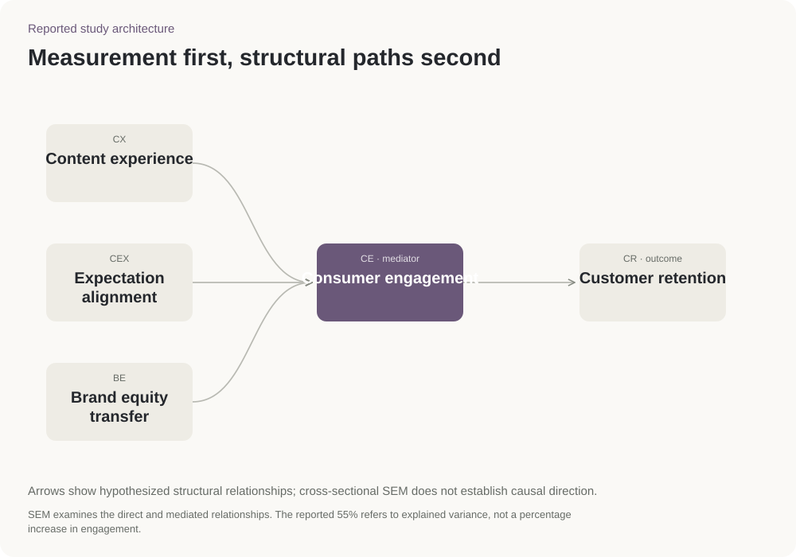

Gắn kết và duy trì người theo dõi
Khảo sát người dùng đang hoạt động trên nền tảng nội dung do người dùng tạo (UGC), tìm hiểu mối liên hệ giữa trải nghiệm nội dung, mức đáp ứng kỳ vọng, giá trị thương hiệu, sự gắn kết và ý định tiếp tục sử dụng.
Các mối quan hệ trong nghiên cứu. Sơ đồ không chứng minh quan hệ nhân quả.
- Mẫu nghiên cứu
- 565 người dùng
- Kiểm tra khảo sát
- 200 người dùng + 365 người dùng
- Phương pháp
- Kiểm tra thang đo và mối liên hệ
Gắn kết là mắt xích trong mô hình
Giải thích 55% biến thiên gắn kết · 70% duy trì.
Kiểm tra thang đo, sau đó phân tích mối liên hệ giữa trải nghiệm nội dung, kỳ vọng, cảm nhận thương hiệu, sự gắn kết và ý định tiếp tục sử dụng.
Gắn kết nối trải nghiệm nội dung với ý định quay lại.
Mô hình khảo sát · gắn kết và duy trì người dùng.
Trải nghiệm nội dung
Mô hình xem trải nghiệm nội dung là yếu tố có liên hệ với sự gắn kết. EFA và CFA kiểm tra cấu trúc thang đo trước khi SEM ước lượng mối liên hệ giữa các khái niệm.
Tách mẫu kiểm tra thang đo
Mẫu EFA độc lập với mẫu CFA/SEM; CFA và SEM dùng cùng 365 câu trả lời.
Cấu trúc bản thảo và hình báo cáo; tổng n = 565, EFA = 200, CFA/SEM = 365.
Ứng dụng cho nhóm triển khai chiến dịch
Xem nội dung có đáp ứng kỳ vọng, phù hợp thương hiệu và tạo lý do để người xem tương tác hay không.
Cách thực hiện nghiên cứu
Phân tích khảo sát · EFA · CFA · SEM
Khám phá cấu trúc thang đo
Phân tích nhân tố khám phá (EFA) dùng 200 câu trả lời để tìm các nhóm câu hỏi cùng phản ánh một khái niệm.
Kiểm tra thang đo
Phân tích nhân tố xác nhận (CFA) sử dụng 365 phản hồi để kiểm tra cấu trúc đo lường đó.
Kiểm tra các mối quan hệ
Mô hình phương trình cấu trúc (SEM) dùng cùng 365 phản hồi để kiểm tra mối liên hệ giữa các khái niệm được đo.
Sơ đồ nghiên cứu

Nguồn và trạng thái
Dự án nghiên cứu khảo sát